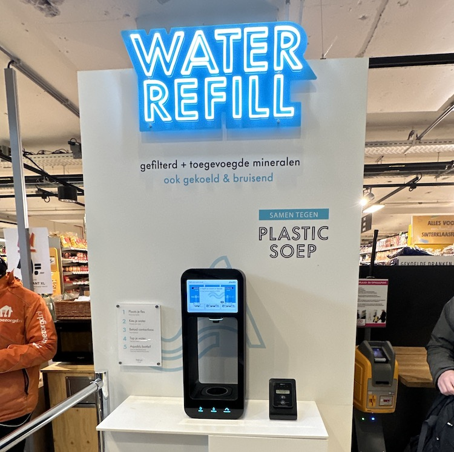

Een nieuw tappunt in jouw buurt!
Hoe werkt het?
-
Stap 1
Jij stuurt jouw aanvraag op in het formulier.
-
Stap 2
Wij scouten de locatie en checken of het mogelijk is.
-
Stap 3
Is het een geschikte locatie? Dan bespreken we het met de gemeente.